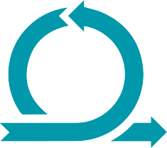
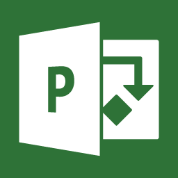

Nesta seção, o objetivo é narrar um pouco da minha experiência profissional. Assim, resumirei em tópicos os assuntos abordados:
Histórico acadêmico: minha formação e atuais formações em andamento;
Descrição de cursos e habilidades
Histórico profissional.
Bacharel em Administração (Concluido em: 12/2021)- FADERGS
 Pós-Graduação em Data Science (Formação em 03/2023) - UNIRITTER
Pós-Graduação em Data Science (Formação em 03/2023) - UNIRITTER
Sistemas para Internet (Formação em 11/2024) - UNIRITTER
Habilidades
 HTML
HTML
 CSS
CSS
 Python
Python
SQL
 GitHub
GitHub
Metodologia Ágil: Scrum, Kanban e Lean
KPI's
Ms Excel (avançado)
Ms Project
Ms Power Bi
BPMN
Histórico Profissional
Conselho Regional de Administração do Rio Grande do Sul
Responsável por Grupo (Analista Administrativo)- início: 01/2021 - fim: 05/2022
Atividades desempenhadas:
Responsável pela criação de: Planilhas automatizadas, com MS Excel (VBA, Macros), indicadores de desempenho (KPI's), fluxogramas (Bizagi);
Responsável por criar novas ferramentas para automatização de etapas de trabalho;
Analista de Prcocessos e criador de Dashboard (Power Bi e Ms Excel);
Criação de melhoria contínua, fluxo e automatização de processos
Conselho Regional de Administração do Rio Grande do Sul
Estagiário de Administração - início: 02/2019 - fim: 01/2021
Atividades desempenhadas:
Responsável pela criação de planilhas ( MS Excel) e e-mails ( MS Outlook) automatizados, para facilidade e automatização de processos.
Criação de KPI's;
Área de Financeira: cobranças e negociações;
Atendimento ao público.
Prefeitura Municipal de Porto Alegre
Estagiário de Administração - início: 01/2019 - fim: 12/2019
Atividades desempenhadas:
Área de Financeira: cobranças e negociações;
Criação de apresentações de dados e cursos de integração(Ms Power Point);
Atendimento ao Público.
Hospital Mãe de Deus
Agente de Atendimento - início: 03/2014 - fim: 05/2015
Atividades desempenhadas:
Call-Center;
Atendimento ao Público
Agendamento de consultas e exames.
EPTC - Empresa Pública de Transporte e Circulação
Estagiário - início: 04/2012 -fim: 02/2014
Atividades desempenhadas:
Contagem de fluxo de veículos e pedestres
Sperinde Imóveis
Estagiário de Recursos Humanos - início: 03/2013 - fim: 05/2013
Atividades desempenhadas:
Atendimento ao público;
Impressão e Organização de documentos (contra-cheque, termo de contrato de trabalho);
Solicitação de benefícios (VA/VR e VT);
Prefeitura Municipal de Porto Alegre
Estagiário de Ensino Médio- início: 01/2011 - fim: 08/2011
Atividades desempenhadas:
Atendimento ao público;
Impressão e Organização de documentos;
Atualização de processos;